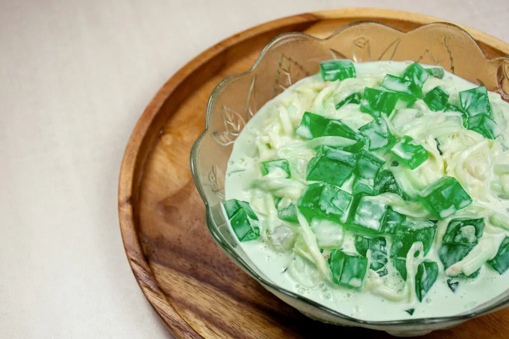

Buko Pandan

Description
Sweet, refreshing, washes all your worries away
Buko Pandan All The Way!
Ingredients
- 1 1/2 cup young coconut
- 5 ounces condensed milk
- 8 ounces Table cream
- 3 ounces powdered gelatin
- 1 1/4 cups water
- 6 drops Buko Pandan flavoring
- 2 scoops vanilla ice cream
- 1/2 cup sago pearls
Steps
- Combine water and powdered gelatin then stir using a spoon.
- Add Buko Pandan flavoring then
- Heat a saucepan and pour-in the mixture. Bring to a boil while continuously stirring.
- Turn off the heat and transfer the mixture to a mold. Allow the temperature to cool. The texture of the mixture should be firm once cooled. You may
also place the inside the refrigerator for faster results (allow the temperature to go down before putting-in the refrigerator).
- Combine condensed milk, table cream, sago pearls, and young coconut then mix well. Allow the texture to thicken by chilling
in the refrigerator or freezer for a few hours.
- Slice the firm gelatin into 1 inch cubes then combine with the condensed milk-cream-young coconut-sago mixture
- Transfer to individual sarving platteres or cups then top with a scoop of vanilla ice-cream
- Serve for dessert. Share and enjoy!